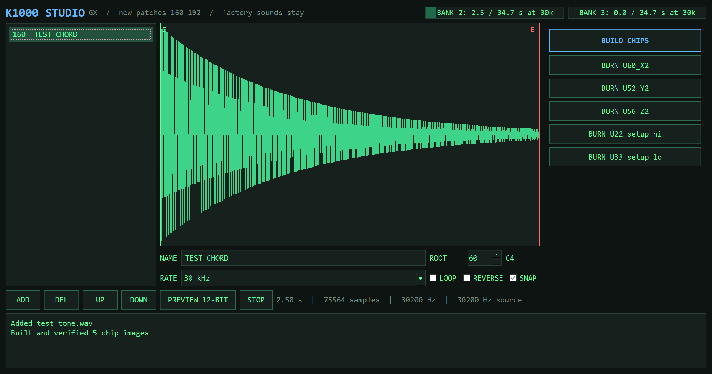

Kurzweil 1000 mod: your own samples in the empty ROM sockets
The Kurzweil 1000 GX (K1000) leaves half of its wave ROM sockets empty. K1000 Studio fills them from WAV files and adds each sound as a new patch.
STATUS: HARDWARE TEST IN PROGRESS

What it does
33 new patchesNumbers 160 to 192, named on the LCD. Factory sounds stay byte for byte.
69 s at 30 kHzTwo free banks, up to 278 s at the 7.5 kHz crunch setting.
Trim and loopDrag markers on the waveform, snap to zero crossings, reverse.
Hear it firstPreview the 12-bit data before you burn anything.
Checked imagesEvery build is read back and checked against what you asked for.
Burn from the appOne button per chip, to an XGecu T48 through minipro.
What you need
- A Kurzweil 1000 GX with SETUP V2.5, and your own dump of U22 and U33.
- W27C040 chips, three per bank: U60, U52, U56 for bank 2 and U61, U53, U57 for bank 3.
- Two W27C512 chips for the new SETUP. Keep the originals.
- Windows, Python 3.10+, and a T48 programmer.
Status
The wave and SETUP formats are decoded and checked against factory data, and the chip images pass verification in software. The first burn and listening test on a real GX are next. PX Plus, SX and HX aren't supported yet.
Questions
What is the Kurzweil 1000 sample format?
Each bank is three 512 KB chips holding pairs of 12-bit sign-magnitude samples, about one million per bank. The base rate works out to about 30.2 kHz.
Does this replace the factory sounds?
No. New patches are appended after them. Put your original U22 and U33 back and the unit is stock.